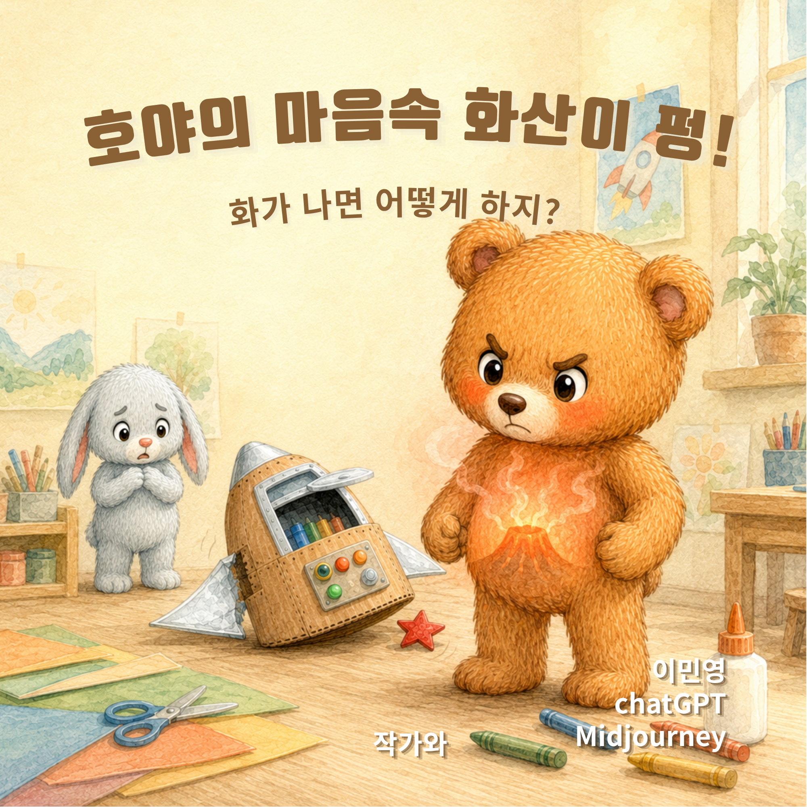

호야의 마음에 화산이 펑
화가 나는 순간을 이해하고 표현하는 방법을 따뜻하게 풀어낸 어린이 감정 그림책.
Dearly Adored는 마음을 다독이는 이야기와 AI 아트, 그리고 조금 천천히 살아가는 영감을 담는 작은 창작 공간입니다.
아이의 마음, 어른의 쉼, 그리고 일상 속 작은 감정을 담은 Dearly Adored의 작업들입니다.

화가 나는 순간을 이해하고 표현하는 방법을 따뜻하게 풀어낸 어린이 감정 그림책.
바쁜 하루 사이, 잠시 멈추어 마음을 들여다보는 어른을 위한 작은 휴식 같은 이야기.
사람과 기술, 빛과 감정을 연결하는 AI 아트 시리즈. 조용하지만 오래 남는 장면을 만듭니다.
Dearly Adored는 ‘사랑받는 존재’라는 뜻에서 시작했습니다. 아이에게는 감정을 이해할 수 있는 이야기로, 어른에게는 잠시 멈출 수 있는 문장과 이미지로 다가가고 싶습니다.
AI는 도구일 뿐, 창작의 시작과 끝에는 언제나 사람의 경험과 마음이 있다고 믿습니다. 그래서 이곳의 작업은 기술보다 감정, 속도보다 온기, 완벽함보다 진심을 더 중요하게 생각합니다.
짧은 영상, 글, 오디오와 함께 하루 중 몇 분이라도 마음을 내려놓는 시간을 만들어보세요.
하루 1분, 호흡과 문장으로 마음의 속도를 낮추는 짧은 콘텐츠.
얼굴을 드러내지 않고도 편안하게 들을 수 있는 감성적인 영상과 이야기.
스스로를 조금 더 이해할 수 있도록 돕는 질문, 짧은 글, 그리고 작은 실천.